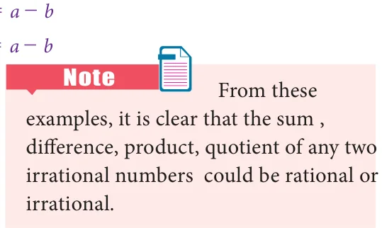

It can be shown that irrational numbers, when expressed as decimal numbers, do not terminate nor do they repeat. For example, the decimal representation of the number \(\pi\) starts with 3.14159265358979..., but no finite number of digits can represent \(\pi\) exactly, nor does it repeat. Consider the following decimal expansions:
- 0.1011001110001111… (ii) 3.012012120121212…
- 12.230223300222333000… (iv) \(\sqrt{2} = 1.4142135624\ldots\)
Are the above numbers terminating (or) recurring and non- terminating? No… They are neither terminating, nor non - terminating and recurring. Hence they are not rational numbers. They cannot be written in the form of \(\frac{p}{q}\) , where p, q \in \mathbb{Z} and q \neq 0. They are irrational numbers.

Thus, by division method, \(\sqrt{3} = 1.7320508\ldots\)
It is found that the square root of every positive non-perfect square number is an
irrational number. \(\sqrt{2}\), \(\sqrt{3}\), \(\sqrt{5}\), \(\sqrt{6}\), \(\sqrt{7}\), ... are all irrational numbers.
Classify the numbers as rational or irrational: (i) \(\sqrt{10}\) (ii) \(\sqrt{49}\) (iii) 0.025 (iv) \(0.7\overline{6}\) (v) 2.505500555... (vi) \(\frac{\sqrt{2}}{2}\)
Solution
- \(\sqrt{10}\) is an irrational number (since 10 is not a perfect square number).
- \(\sqrt{49} = 7 = \frac{7}{1}\), a rational number (since 49 is a perfect square number).
- 0.025 is a rational number (since it is a terminating decimal).
- \(0.7\overline{6} = 0.7666\ldots\) is a rational number ( since it is a non - terminating and recurring decimal expansion).
- 2.505500555…. is an irrational number ( since it is a non - terminating and
non - recurring decimal).

\(\frac{\sqrt{2}}{2} = \frac{\sqrt{2}}{\sqrt{2} \times \sqrt{2}} = \frac{1}{\sqrt{2}}\) is an irrational number (since 2 is not a perfect square
number).
Note
The above example (vi) it is not to be misunderstood as \(\frac{p}{q}\) form, because both p and q must be integers and not an irrational number.
Example 2.10
Find any 3 irrational numbers between 0.12 and 0.13 .
Solution
Three irrational numbers between 0.12 and 0.13 are
0.12010010001…, 0.12040040004…, 0.12070070007…
Note
We state (without proof) an important result worth remembering. If 'a' is a rational number and b is an irrational number then each one of the following is an irrational number:
- \(a + b\) ; (ii) \(a - b\) ; (iii) a b ; (iv) ab ; (v) ab .
For example, when you consider the rational number 4 and the irrational number \(\sqrt{5}\), then \(4 + \sqrt{5}\), \(4 - \sqrt{5}\), \(4\sqrt{5}\), \(\frac{4}{\sqrt{5}}\), \(\frac{\sqrt{5}}{4}\) ... are all irrational numbers.
Give any two rational numbers lying between 0.5151151115…. and 0.5353353335… Solution Two rational numbers between the given two irrational numbers are 0.5152 and 0.5352

Find whether \(x\) and \(y\) are rational or irrational in the following.

Solution
- Given that \(a = 2 + \sqrt{3}\), \(b = 2 - \sqrt{3}\)
\(x = a + b = (2 + \sqrt{3}) + (2 - \sqrt{3}) = 4\),
a rational number.
\(y = a - b = (2 + \sqrt{3}) - (2 - \sqrt{3}) = 2\sqrt{3}\), an irrational number.
- Given that \(a = \sqrt{2} + 7\), \(b = \sqrt{2} - 7\). \(x = a + b = (\sqrt{2} + 7) + (\sqrt{2} - 7) = 2\sqrt{2}\), an irrational number. \(y = a - b = (\sqrt{2} + 7) - (\sqrt{2} - 7) = 14\), a rational number.
- Given that \(a = \sqrt{75}\), \(b = \sqrt{3}\). \(x = ab = \sqrt{75} \times \sqrt{3} = \sqrt{75 \times 3} = \sqrt{5 \times 5 \times 3 \times 3} = 5 \times 3 = 15\), a rational number. \(y = \frac{a}{b} = \frac{\sqrt{75}}{\sqrt{3}} = \sqrt{\frac{75}{3}} = \sqrt{25} = 5\), a rational number.
- Given that \(a = \sqrt{18}\), \(b = \sqrt{3}\)
\(x = ab = \sqrt{18} \times \sqrt{3} = \sqrt{18 \times 3} = \sqrt{6 \times 3 \times 3} = 3\sqrt{6}\), an irrational number. \(y = \frac{a}{b} = \frac{\sqrt{18}}{\sqrt{3}} = \sqrt{\frac{18}{3}} = \sqrt{6}\), an irrational number.
Example 2.13
Represent \(\sqrt{9.3}\) on a number line.
Solution
Draw a line and mark a point A on it.
- Mark a point B such that \(AB = 9.3\) cm. \n
- Mark a point C on this line such that \(BC = 1\) cm. \n
- Find the midpoint of AC by drawing perpendicular bisector of AC and let it be O. \n
- With O as center and \(OC = OA\) as radius, draw a semicircle. \n
- Draw a line BD, which is perpendicular to AB at B.
- With B as centre BD as radius draw an arc which intersects the line AC at E.
- Now \(BD = \sqrt{9.3}\), which can be marked in the number line as the value of
\(BE = BD = \sqrt{9.3}\)\n
Fig. 2.8